Motion Capture Week 3
 It's still a work in progress but with so little time these days, I decided to go with a kitbash workflow.
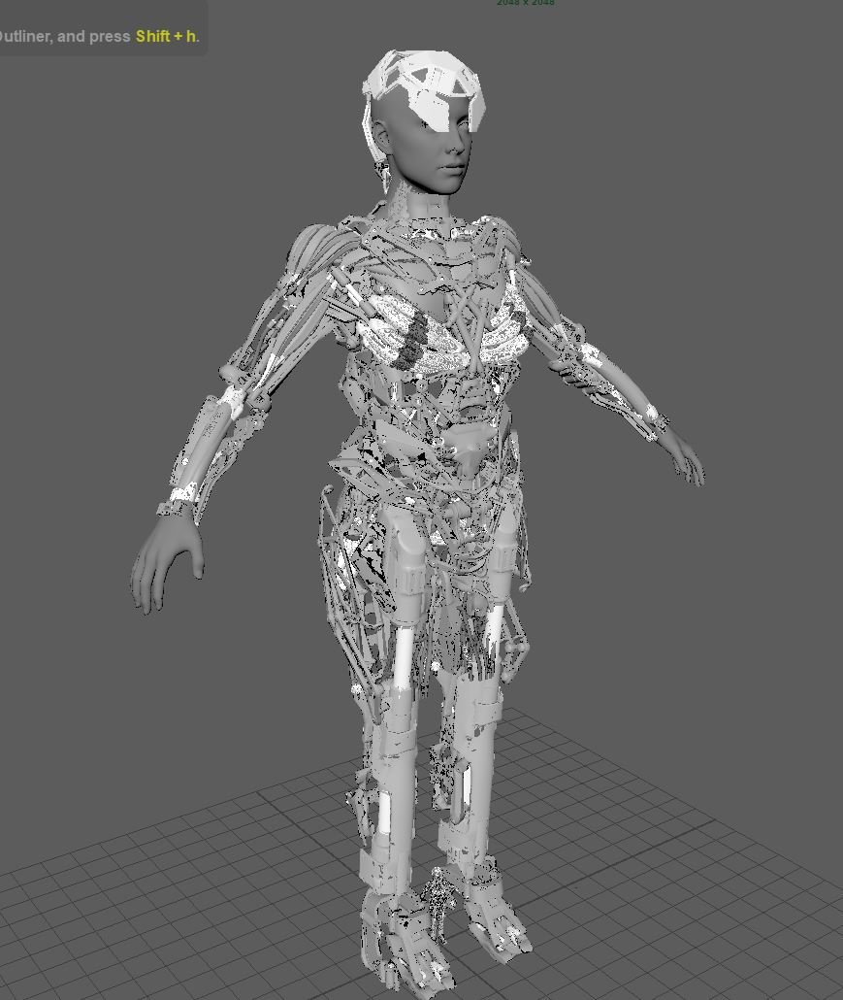
The pre-made hard-surface pieces I bought were from an artist named Vitaly Bulgarov from his website. In Maya I had to place
the parts together to start composing the character.
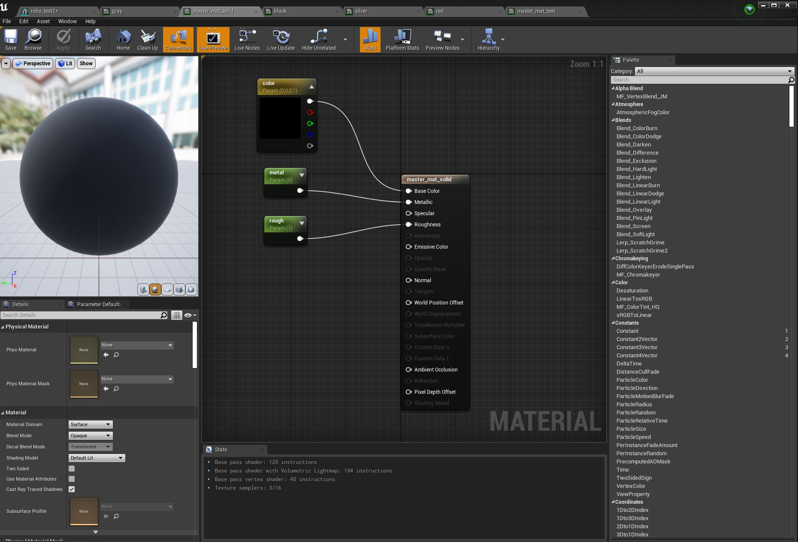
I decided to start making some master materials before importing my character, one for when I have textures to add
and one with just basic solid materials.
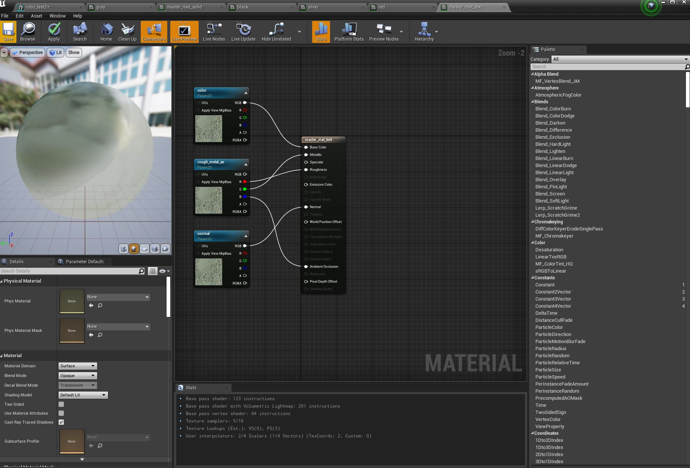
From work experience, I learned about this workflow of master materials, it makes it so that you can slot in parameters
so that you can make an instance that would accept textures or values so that you could
interactivly edit the attributes without having to save and wait for the changes to save.
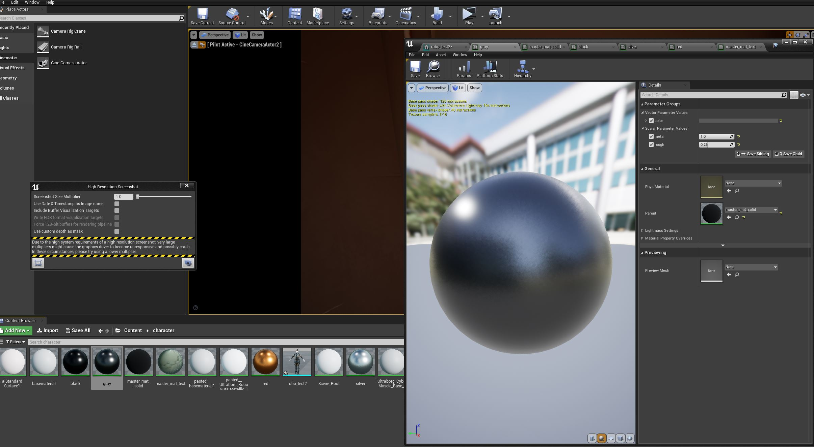
This also helps speed things up when you have dozens of textures to bring in since you can just slot them into instances
without having to make a bunch of new materials and connect a bunch of pipes. I think it also makes the stuff run faster
in engine. I also will have my black and white textures like roughness and metallic merged later on in the RGB channels for
more optimizating.
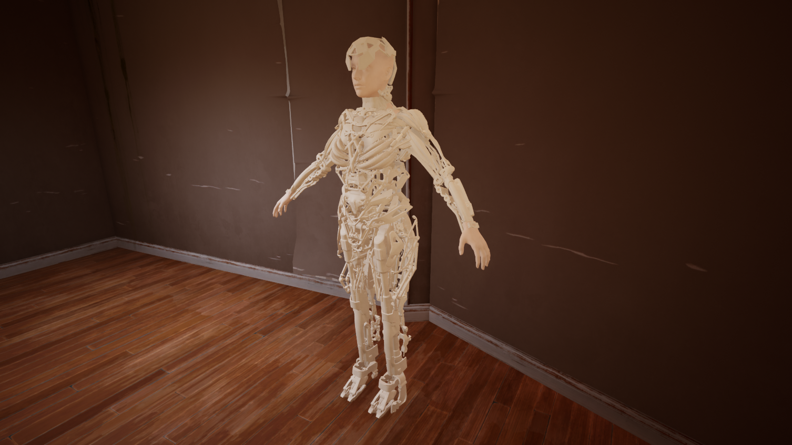
I decided to try the character out in the environment and new lighting I set up to feel things out.
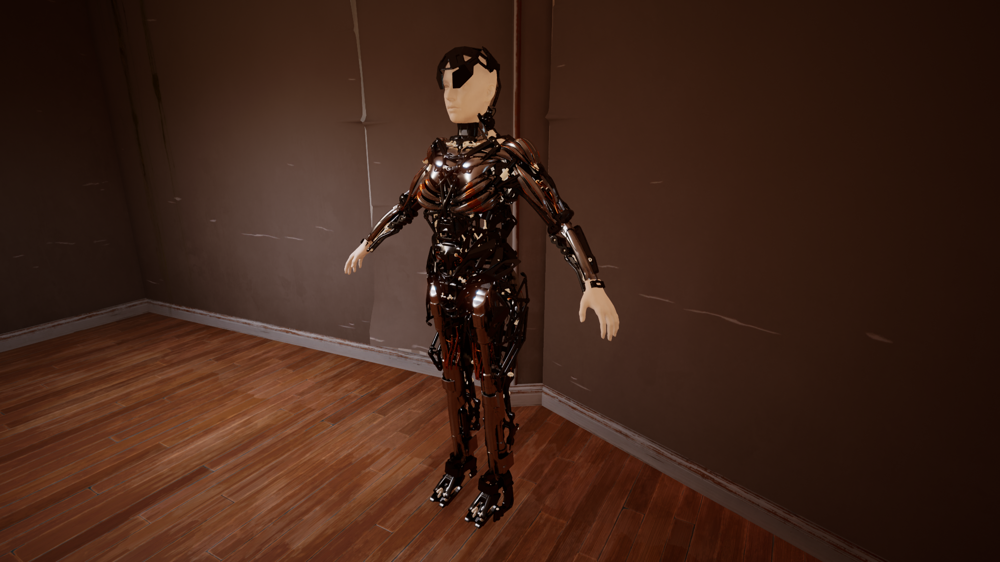
Put on some placeholder solid materials that look like metal and started feel out how my character would look.
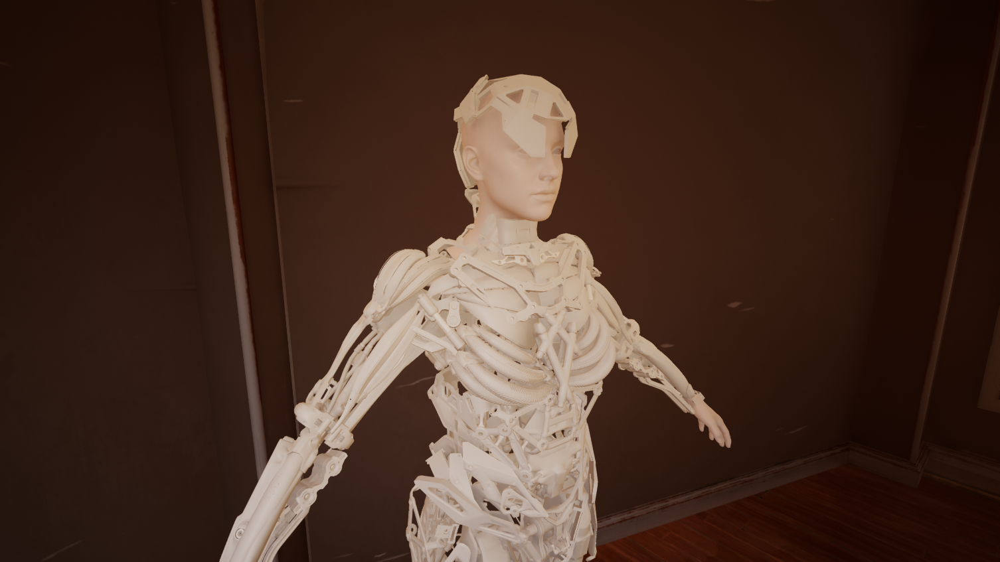
So far so good I think. Still have a lot to do on her but pretty happy with how it's coming along so far!
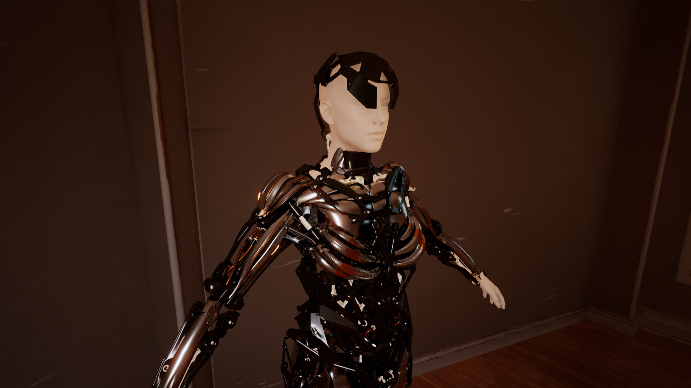
It's still a work in progress but with so little time these days, I decided to go with a kitbash workflow.
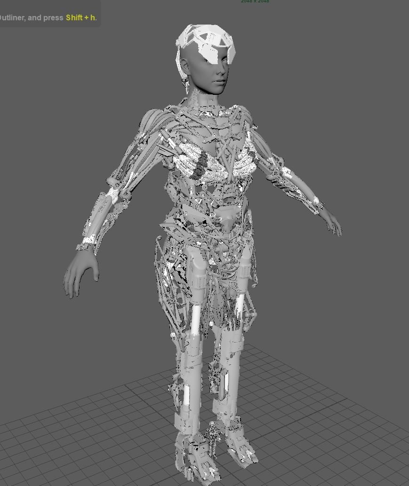
The pre-made hard-surface pieces I bought were from an artist named Vitaly Bulgarov from his website. In Maya I had to place
the parts together to start composing the character.
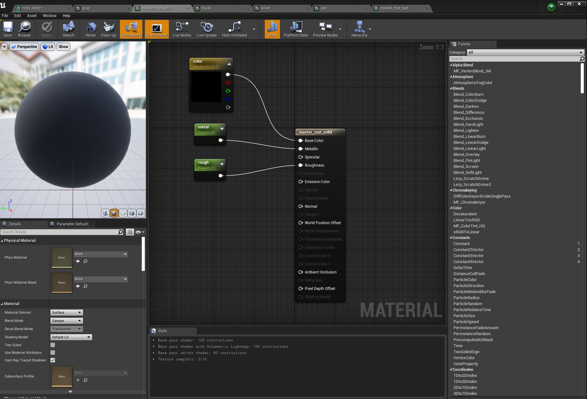
I decided to start making some master materials before importing my character, one for when I have textures to add
and one with just basic solid materials.
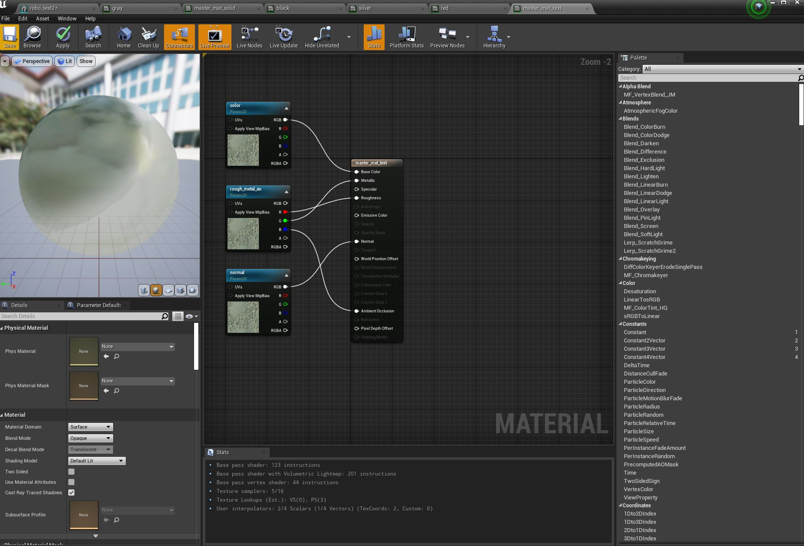
From work experience, I learned about this workflow of master materials, it makes it so that you can slot in parameters
so that you can make an instance that would accept textures or values so that you could
interactivly edit the attributes without having to save and wait for the changes to save.
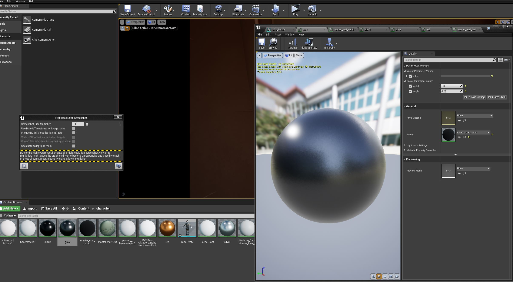
This also helps speed things up when you have dozens of textures to bring in since you can just slot them into instances
without having to make a bunch of new materials and connect a bunch of pipes. I think it also makes the stuff run faster
in engine. I also will have my black and white textures like roughness and metallic merged later on in the RGB channels for
more optimizating.
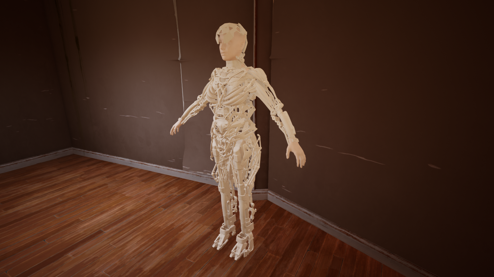
I decided to try the character out in the environment and new lighting I set up to feel things out.
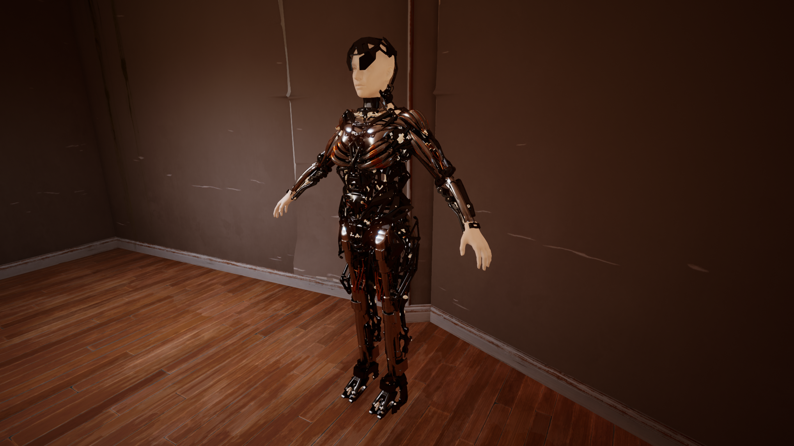
Put on some placeholder solid materials that look like metal and started feel out how my character would look.
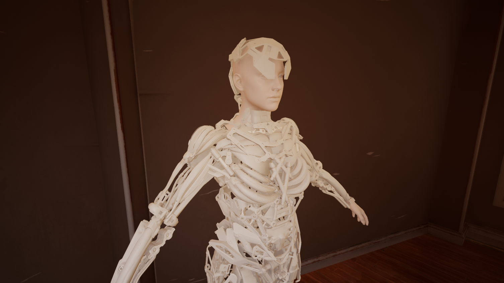
So far so good I think. Still have a lot to do on her but pretty happy with how it's coming along so far!
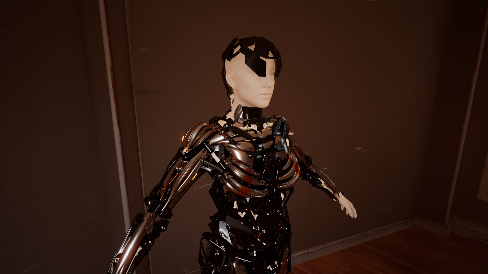
{kind=link}
home
while (!deck.isInOrder()) {
print 'Iteration ' + i;
deck.shuffle();
i++;
}
print 'It took ' + i + ' iterations to sort the deck.';